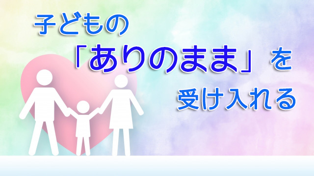

正見と言う言葉がある。本来これは仏教用語（八正道の一つ）で意味は「正しく見ること」。正見＝正しく見る？そのまんまじゃねと思うかも知れないが、逆に言うと私たちは物事を正しく見ること、事物の正確な姿（実相）を捉えることはなかなかできないことを表している。
私たちは日頃物事の「ありのまま」を見ていないし、従って「あるがまま」を受け入れることができない。
それはナゼかというと私たちは常に自分の解釈を通して判断してしまうからだ。
自分の価値判断や自分の都合というフィルターを通して物事を見ていて、物事自体をあるがままに見ていない。
人は皆固有の価値判断をもっている。これは各々が色つきサングラスをかけているようなもの。青いメガネをかけていればすべての景色は青く見えるし、赤いグラスなら赤に染まるようなもので「これは青だ。いや赤だ」と互いの違いを言い合って争ったりしている。
以前こんなエピソードを聞いた。電車の中である若者が優先席に堂々と座っているのを見て、乗客の一人が席を空けるよう注意した。若者は大人しく席を立ったが何と片足が不自由らしく足を引きずりながら去ったという。
この話で大切なことは「だから他人を外見で判断してはいけない」とか「座っている姿だけでは障害をもっているとまでは分からないのだから仕方ない」という議論にあるのではない。
問題はこの注意した乗客の見方にある。恐らく彼は「優先席はお年寄りや身体の弱い人のためにある。それなのに健康な若者が堂々と座っているのはケシからん」と常々思っていたのではないか。その自分なりの判断（本人的には義憤）が既にバイアスとなっていたわけだ。
こんな例はたくさんある。私にも覚えがある。授業中にウトウト居眠りする生徒がいると「ヤル気がないのだな」と判断しがちだが、実際は部活の大会前で練習がハードだからつい眠くなっただけでヤル気がないわけではないこともある。
確かに目の前の現象は「眠そう」だが、その現象を直ちに「ヤル気がない」と結びつけるのは飛躍である。
判断によって目が曇る
見ることと判断することは違う。事実を事実として受け入れることと解釈することも違う。それなのに私たちは何かを見ると瞬時にこれは良いとか悪いと判断し「このままでは大変なことになる」などと自分流に解釈して結果として大局を誤りがちだ。
子をもつ親の決まり文句を拾うと「学校から帰ってもソファで寝てばかり…」「試験近いのにダラダラして勉強に集中しない」「部屋が汚い。何度言っても片づけない」「起こさないと朝起きれない」など子どもの行状を心配する声が並ぶ。
共通するのは事実そのものより「このままでは大変なことになるのではないか」という先行きへの不安だ。
起こってもいない将来の不安に基いて現在の様子を悪いもの、良くないものと決めつけ変えようとする。それはむしろ事態を悪化させる。
親からすれば「帰宅後ソファで寝てばかりいる」→「ここのところずっとそんな態度だ」→「このままでは勉強時間は減るばかり」→「テストや成績も下がるかも知れない」→「受験生なのにこれで良いのか」→「入試にも受からず良い学校へ行けないかも」→「将来が真っ暗だ」という思いが瞬時に浮かぶわけだが、いま起こっている事実は子どもがソファで寝ているだけだ。
もう一度言うが事実は「子どもがソファで寝ているだけ」だ。それなのにこんなにたくさんの解釈や判断、予測、心配の余計なフィルターで「事実」をゆがめてしまう。
先の私の例と同じく「この子はヤル気がない」と決めつけるように。
困るのはこの決めつけによって子どもが本当にヤル気を失くしてしまうことだ。
子どもにも子どもなりの事情がある。部活で疲れて勉強が進まないことにいちばん悩んでいるのは当の子ども自身だったりする。また部活や生徒会の責任者をやっていて部員と顧問の板バサミで疲弊し、くつろげるのは家に帰ったときだけということもある。（実際こういう子は多い）
そんなとき暖かい家庭のソファでしばし眠ることはむしろ英気を養っているという見方もできる。
そう考えれば「ソファで眠ることイコール悪いこと」とは親の勝手な判断（思い込み）に過ぎないとも言える。
少なくとも子どもの生活環境全体を見ず―親といえど子どもの全体をすべて把握することはできないがだからこそ―ある瞬間だけを切り取って一方的に決めつけ矯正するのは逆効果なのだ。
ありのままを受け入れる
だから親のやるべきは「ソファで寝ている」という事実をまず認め受け入れること。そのとき将来がどうのこうのとか、起こってもいない出来事をアレコレ想定し不安や心配を勝手につくり出さないこと。それらは妄想に過ぎない。
まずは目の前の事実を「そういうもの」として受け取ることが大事である。
目の前の出来事はそれ単独で突然現れたのではない。様々な背景のもとに連続する情景の一コマとして今そこに浮かび上がっているものだ。たくさんの出来事の連鎖の上にその「寝ている」という現象が起こってきている。それ自体に良いとか悪いという「意味」があるわけではない。
よく考えてみて欲しい。「寝ている」のは寝ているという状態であって、寝ていることに良いとか悪いという意味があるだろうか。
意味づけるのは、そのことが都合が良いとか悪いと見る者が解釈したとき初めて生ずるものであくまで価値判断であり、正確な事実ではない。
寝ていることとヤル気がないは直接結びつくものではない。まして「勉強が…」とか「将来が…」という連想はまったく無駄なエネルギーの消耗である。
だからまず子どもの現状―あるがままの姿―を認め受け入れる。極力試行的判断や感情を動かさず「いまはこうなんだな」と納得する。価値判断をせず物事を中立に見ること。物事を色づけせず、ただ起こっていることがある（在る）という見方を続ける。
頭を過去や未来に飛ばさず今このときの子どもの姿を素直に受け入れてみる。ただ子どもの姿そのものを白紙の状態でながめる感じ。判断を下さず静かに観察するようにながめる。
するとどうなるだろう。様々な思いが沸いてくるだろう。「よく眠ってるなァ。よほど疲れてるんだな」「こうしてみると寝顔が幼いころとちっとも変わってない」「この子も学校のことや部活、塾などけっこう大変なんだろうな」
しばらく忘れていた子どもへの愛しさがよみがえるかも知れない。
そのとき親であるあなたは気づくだろう。なぜ自分は子どもにあんなにもイライラしたり不安になっていたのかと。すべては自分の側にあった。子どもに問題があったのではなく自分の見方のほうこそが問題であった。
子どもの本質は幼いときから何も変わっていない。変化しているのは表面だけだ。自分のほうこそ「良い成績を取って欲しい」「もっとガンバって上を目指して欲しい」「やればできるはず」と子どもにアレコレ注文していた。
自分の欲求、願望、見栄そして世間の評価を物差しに子どもを値踏みしそれに見合う成果を出さないことに苛立っていた。
そう気づいたらいかに子どもの「今」を正確に見ていなかったか、自分や世間の価値判断で子どもの「今」を見過ごしていたか改めて知るだろう。
「正見」することで子どもは変わる
こうして今の大切さを知り、子どもの今を受け入れ抱き締めるときつまり子どもの「ありのままの姿」を包み込むとき、そこには何も心配や不安がなかったと実感するだろう。
すると不思議なことが起こる。
子どもの行状が変わるのだ。変化は人にもよるが、ソファで寝てばかりの子が計画的に行動し始めたりする。急に勉強に集中するようになったり何事も前向きに取り組みだしたりする。
あれほど注意したり叱っても動かなかった子が自発的に行動する。親が子を思い通りにしようと苦心していたときには思い通りにならず、ただ親が自らのフィルターを外し「ありのまま」を受け入れただけで、まさに理想通りの姿に変化する。これは子どもの現状を正確に認め続けているうちに気がついたらそうなっていたという形だ。
物事が変化するのは、現実を受け入れたときというのは正しい。現実を否定しながら現実を良い方向へ変えるのは非常な困難を伴うからだ。
そのためにはまず今起こっている事実を正確に見ることから始めなければならない。
だがこれは意外と難しい。何度も言うように私たちは瞬時に良い悪い、快不快、有利不利という自分にとっての都合で判断するからだ。
だが、大局を見誤らないためにも私たちは物事を中立（ありのまま）に見ることを心がけねばならないと思う。
特に親子関係においては、真に子どもの将来を良いものにしたいのなら「子どもとの今」こそを大切にすべきだ。今の積み重ねが未来の幸福をつくり出すからだ。
まずは子どもの現状を正確に見る。ありのままを受け入れる。そこから始めよう。
それが正見ということになる。